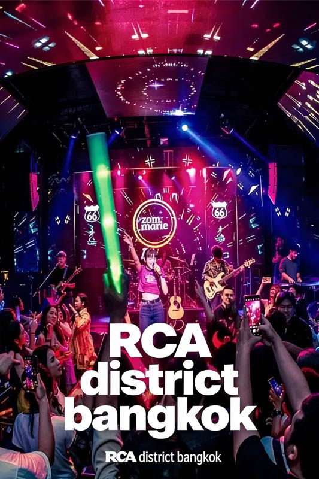

RCA (Royal City Avenue) is Bangkok's premier modern nightclub district, representing the cutting edge of the city's clubbing scene. Located 10 kilometers from Royal Ivory Hotel on New Petchburi Road, this entertainment complex features world-class venues with international DJs, state-of-the-art sound systems, and luxury VIP experiences.
What sets RCA apart is its modern clubbing atmosphere and international standards. Unlike traditional entertainment districts, RCA focuses on contemporary music venues featuring EDM, hip-hop, and house music with professional lighting, premium sound quality, and sophisticated venue designs that rival clubs in major international cities.
For Royal Ivory Hotel guests seeking premium nightlife, RCA offers an upscale clubbing experience with venues catering to young professionals, international visitors, and music enthusiasts. The district attracts a stylish crowd aged 18-35 and enforces dress codes ensuring a refined atmosphere.
RCA Clubs are located 10 kilometers from Royal Ivory Hotel with taxi being the most convenient transportation option. The journey provides an opportunity to see modern Bangkok while heading to the city's premier clubbing destination.
Total Cost: 200-400 Baht depending on traffic | Journey Time: 25-30 minutes | Return: Taxis readily available
🚕 Return Planning: Taxis are readily available at RCA until 4:00 AM. Book Grab for reliable pickup, or ask venue staff to help arrange transportation. Keep Royal Ivory Hotel address in Thai for drivers. Consider staying until closing if planning taxi return - more availability at peak hours.
RCA features several world-class venues, each offering unique music styles, atmosphere, and experiences. Understanding the venue types helps visitors choose clubs that match their music preferences and desired atmosphere.
| Venue Type | Music Genre | Atmosphere | Best For |
|---|---|---|---|
| 🎵 EDM Megaclubs | Electronic, house, trance, techno | High-energy, international crowd | Dancing, DJ performances |
| 🎤 Hip-Hop Venues | Hip-hop, rap, R&B, urban music | VIP bottle service, luxury ambiance | Premium experience, socializing |
| 🏙️ Rooftop Clubs | Mixed genres, top 40, house | City views, outdoor atmosphere | Groups, celebrations, views |
| 🍸 Lounge Bars | Chill-out, lounge, jazz influences | Sophisticated, conversation-friendly | Pre-club drinks, networking |
Most RCA venues open around 10:00 PM and operate until 4:00 AM. Peak hours are typically 11:30 PM to 2:30 AM when venues reach capacity and energy peaks. Weekends (Friday-Saturday) are busiest with special events and guest DJs.
RCA represents modern Bangkok nightlife culture, attracting young professionals, international expats, and music enthusiasts seeking premium clubbing experiences. The district's atmosphere combines international club standards with Thai hospitality and service excellence.
The RCA experience centers on high-quality music, professional production values, and social interaction. Venues feature international-standard sound systems, professional lighting designers, and carefully curated music programs that rival major global clubbing destinations.
Professional production: World-class sound, lighting, and visual effects
International standards: Service and venue quality matching global cities
Music focus: Curated playlists and guest DJ performances
VIP services: Bottle service, reserved seating, personal attention
RCA Clubs enforce strict dress codes to maintain upscale atmosphere and venue standards. Understanding requirements ensures smooth entry and helps visitors fit into the sophisticated club environment.
📋 Entry Guidelines:
ID Required: Passport or copy required (18+ venues, 20+ for some)
Cover charges: 500-1,500 Baht depending on venue and night
Guest lists: Some venues offer reduced cover for advance registration
Peak times: Expect lines and wait times 11:00 PM - 1:00 AM weekends
VIP entry: Bottle service reservations provide priority access
RCA represents premium nightlife with pricing reflecting high-quality venues, international standards, and upscale service. Understanding costs helps plan appropriate budgets for different experience levels.
| Category | Price Range (Baht) | Details | Value Tips |
|---|---|---|---|
| 🎫 Cover Charges | 500-1,500฿ | Entry fees, varies by venue/night | Guest lists, early entry discounts |
| 🍺 Drinks | 300-800฿ | Cocktails, premium beer, spirits | Happy hour specials (early evening) |
| 🍾 Bottle Service | 3,000-15,000฿ | Premium tables, dedicated service | Group sharing, VIP experience |
| 🚕 Transportation | 200-400฿ | Round-trip taxi from Royal Ivory | Grab for reliable pricing |
💰 Recommended Budgets:
Budget night: 2,000-3,500 Baht (cover, few drinks, transport)
Standard experience: 4,000-6,000 Baht (multiple venues, drinks)
VIP experience: 8,000-15,000+ Baht (bottle service, premium venues)
Group celebration: Split bottle service for better value
RCA maintains professional security standards and operates under regulated nightlife policies. Following smart clubbing practices ensures a safe and enjoyable experience in Bangkok's premier nightclub district.
🛡️ Safety Guidelines:
Stay with group: Keep track of friends and plan meeting points
Drink awareness: Never leave drinks unattended, know your limits
Cash management: Bring sufficient funds but avoid carrying excess
Phone security: Keep phone charged and in secure pocket
Return plan: Have Royal Ivory contact information and return strategy
From Royal Ivory Hotel: Take taxi or Grab to RCA (Royal City Avenue) on New Petchburi Road. Journey time: 25-30 minutes, cost: 200-400 Baht depending on traffic. No direct BTS connection. Alternatively, take BTS to Thong Lo then taxi (shorter distance).
RCA Clubs typically open from 10:00 PM to 4:00 AM. Some venues start earlier (9:00 PM) while others open later (11:00 PM). Peak hours are 11:30 PM to 2:30 AM when venues are most active. Friday and Saturday nights are busiest.
RCA Clubs enforce strict dress codes. Men: collared shirts, dress pants, closed shoes (no sandals/flip-flops). Women: dresses, heels, stylish attire. No shorts, tank tops, or casual wear. Smart casual to formal dress is required for entry to most venues.
RCA Clubs feature diverse music genres including EDM (electronic dance music), hip-hop, house, techno, and top 40 hits. Different venues specialize in different genres. International and local DJs perform regularly with high-quality sound systems and lighting.
Budget 2,000-6,000 Baht for a standard evening including cover charges (500-1,500฿), drinks (300-800฿ each), and transportation (400฿ round-trip). VIP experiences with bottle service start around 8,000-15,000฿. Group sharing reduces individual costs.
RCA's late operating hours (10 PM-4 AM) make it perfect for combining with daytime Bangkok activities or evening dining experiences. Plan your day to include cultural sites, shopping, and dinner before experiencing Bangkok's premier clubbing scene.
Rooftop dining: Start with dinner at Bangkok rooftop restaurants
Hotel relaxation: Rest at Royal Ivory, change for clubbing attire
Pre-drinks: Begin evening at hotel or nearby bars before RCA
Energy management: Plan rest time before late-night clubbing